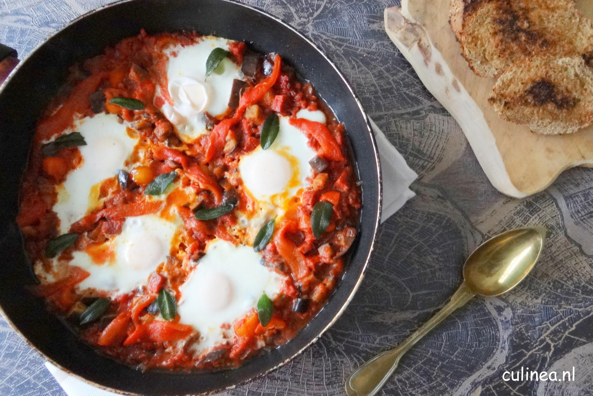

Spirelli
Pasta gremolata met ricotta
Supersnelle pasta met kerstomaatjes
Chorizo met ei

Ingredienten
10kg stenen
1 liter lijm
4 eekhoorns
Bereiding
Dood de eekhoorn
Snipper de peterselie en de knoflook. Vermeng ze met de geraspte citroenschil.
eet de eekhoorn